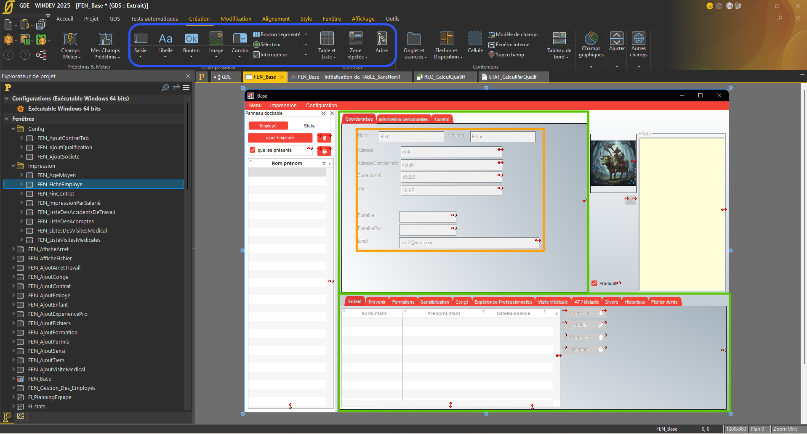

Trace 1 - Conception et organisation de la fenêtre principale de l'application
Savoir-faire élémentaires
- Savoir organiser une interface de manière lisible et fonctionnelle
- Savoir structurer une fenêtre en zones cohérentes
- Savoir intégrer différents composants graphiques dans une même interface
- Savoir adapter une interface aux besoins utilisateurs
- Savoir articuler navigation, affichage et actions dans une application

Repères colorés sur la trace
- Encadré vert : structure générale de la fenêtre et répartition des grandes zones.
- Encadré orange : zone de saisie et d'affichage des informations principales.
- Encadré rouge : actions ou éléments interactifs importants pour l'utilisateur.
- Encadré bleu : zone de tableau ou d'affichage des données associées.
Descriptif général de la trace
Cette trace correspond à la fenêtre principale de l'application sur laquelle j'ai travaillé durant mon stage. Elle présente plusieurs zones fonctionnelles : un menu de navigation, une zone centrale de consultation et de modification, ainsi qu'un espace d'affichage de données complémentaires. Cette fenêtre occupe une place importante dans le projet car elle sert de point d'entrée pour l'utilisateur et regroupe plusieurs fonctionnalités essentielles.
Descriptif des savoir-faire
L'encadré vert met en évidence l'organisation globale de la fenêtre. Il montre que j'ai su organiser une interface de manière lisible et fonctionnelle, en distinguant clairement les grandes zones de travail. L'encadré orange correspond à la zone principale de saisie et d'affichage ; il illustre ma capacité à structurer une fenêtre en zones cohérentes et à intégrer plusieurs composants graphiques dans un même espace. L'encadré rouge met en avant les actions importantes proposées à l'utilisateur, ce qui montre que j'ai su articuler navigation, affichage et actions dans l'application. Enfin, l'encadré bleu souligne la présence d'une zone de données, ce qui traduit ma capacité à adapter l'interface aux besoins concrets de consultation et de gestion.